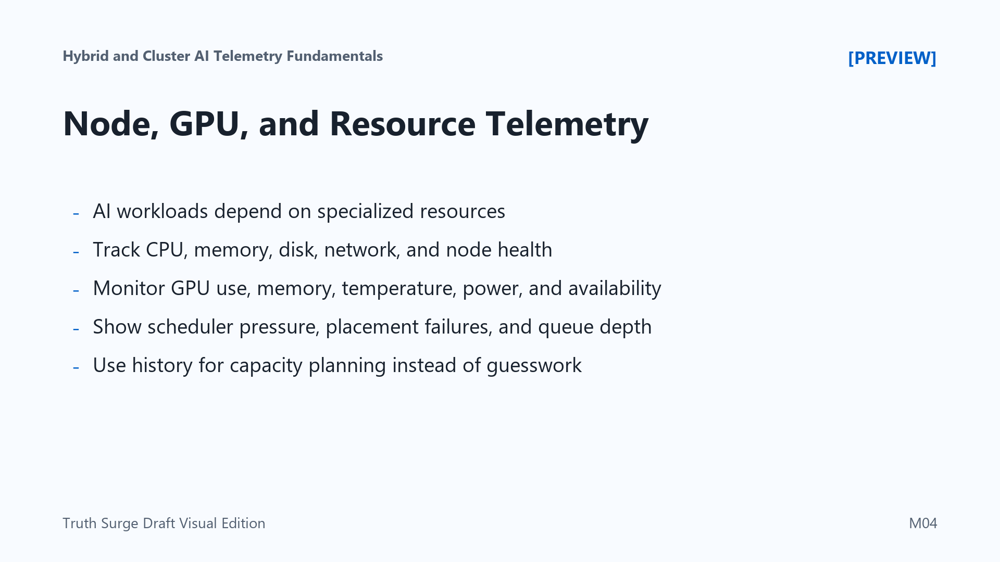

Node, GPU, and Resource Telemetry
Connecting to LMS... Progress: in progress

Narration
AI workloads are often constrained by specialized resources, not just ordinary CPU and memory. A service may be blocked by GPU availability, accelerator memory, storage throughput, network transfer, or scheduler decisions. Resource telemetry helps teams separate model behavior problems from capacity, placement, and infrastructure problems.
At the node level, teams usually need CPU, memory, disk, network, process health, file system pressure, and container or pod status. For AI workloads, accelerator signals become just as important. Useful GPU and accelerator telemetry may include utilization, memory usage, temperature, power draw, throttling, device errors, driver health, and device availability. These signals help explain why a model path may slow down even when application logs show no obvious errors.
Cluster telemetry should show scheduler pressure and workload placement. Pending jobs, failed placements, evictions, queue depth, preemption, resource requests, resource limits, node labels, and capacity trends all affect AI service behavior. A model-serving endpoint may fail an SLO because requests wait behind other work, not because the model itself changed.
Storage and network telemetry also matter. Model loading, embedding indexes, checkpoints, training data, retrieval sources, and logs can create bottlenecks. Historical telemetry supports capacity planning by showing real patterns across peak traffic, batch windows, release events, and incidents. Without that history, teams often guess, overprovision, or chase symptoms instead of fixing the constrained layer.